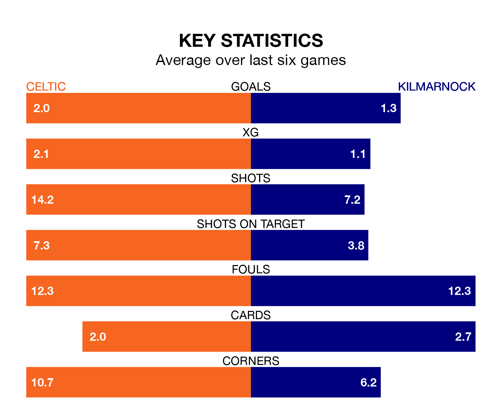

Two of the Premiership's top sides face each other at Celtic Park in Saturday's kick-off, when second-placed Celtic host fourth-placed Kilmarnock.
Celtic have picked up 19 wins and four draws from 25 games so far this season, and sit 25 points above the visitors going into the 3pm match.
Killies, meanwhile, have won nine and drawn nine, picking up 36 points.
With 57 goals in 25 games so far this season, Celtic are the league's highest scorers with 2.3 goals per game. And they are conceding fewer than average, letting in 17 goals at a rate of 0.7 per game.
Kilmarnock, meanwhile, are below average scorers, with 1.1 goals per game, compared to a league average of 1.3. They have conceded 1.0 goal per game.
The Bhoys are in fantastic form in the Premiership, with five wins and a draw from their last six games.
With two wins and three draws over that period, Killies's form is much worse – they have taken nine points from 18, compared to the hosts' 16.
In the last 10 years, Celtic and Kilmarnock have played each other on 32 occasions. Celtic won 23 of them, Kilmarnock four, and they drew five times.
On average, the Bhoys scored 2.3 goals and Killies 0.6 in those matches.
Their last meeting was on December 10, when Kilmarnock won 2-1 at home.
In Matthew O'Riley, Celtic have one of the league's most on-form strikers so far this season. He has notched 10 goals in 24 appearances, to sit third in the scoring charts.
The away team's top scorers, with five goals in 23 games each, are Kyle Vassell and Marley Watkins.
Celtic's last match was on February 7, a 2-1 win against Hibernian, with Adam Uche Idah getting the goals for the Bhoys.
Kilmarnock beat Livingston 1-0 last time out, also on February 7, with Watkins on the scoresheet.
Saturday's match will be refereed by John Beaton, who has taken charge of 13 Premiership games so far this season, issuing one red card and booking 56 players. He has awarded 11 penalties.
The last Celtic game Beaton refereed was a 4-1 home win against Hibernian on December 6. His last Kilmarnock match was their 3-1 loss away at Rangers on January 2.
Updated: 13:04 (UTC), 16/02/24